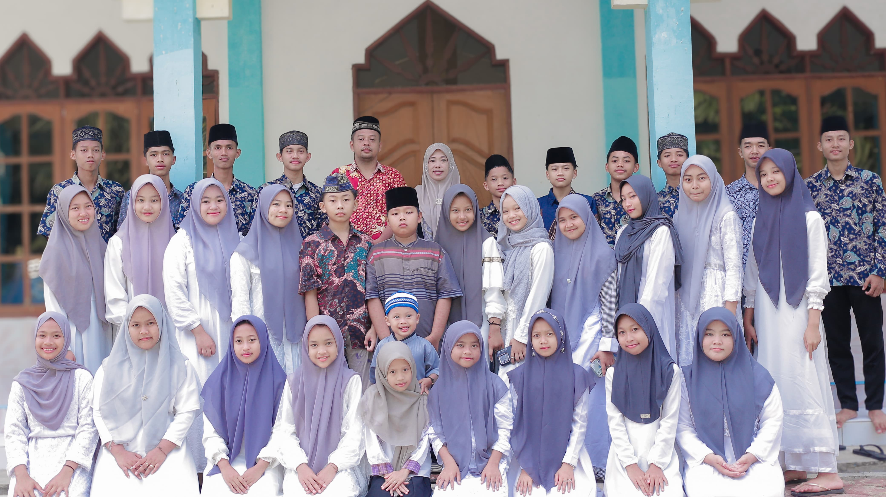

Kegiatan Remaja
kegiatan keagamaan
Kegiatan keagamaan remaja masjid adalah aktivitas seperti mengaji, tadarus, serta shalat berjamaah, berguna untuk memperdalam iman, ilmu agama, serta mempererat ukhuwah Islamiyah.
kegiatan Gotong Royong
Gotong royong remaja masjid adalah bentuk kebersamaan dalam menjaga kebersihan dan kenyamanan masjid serta lingkungan sekitarnya. Kegiatan ini mencerminkan nilai kepedulian, kerja sama, dan semangat kebersamaan dalam membangun lingkungan yang lebih baik.
kegiatan Olahraga
Olahraga remaja masjid adalah kegiatan yang menggabungkan kesehatan, kebersamaan, dan semangat ukhuwah melalui berbagai aktivitas fisik seperti futsal, voli, atau badminton, dalam suasana yang sportif dan islami.